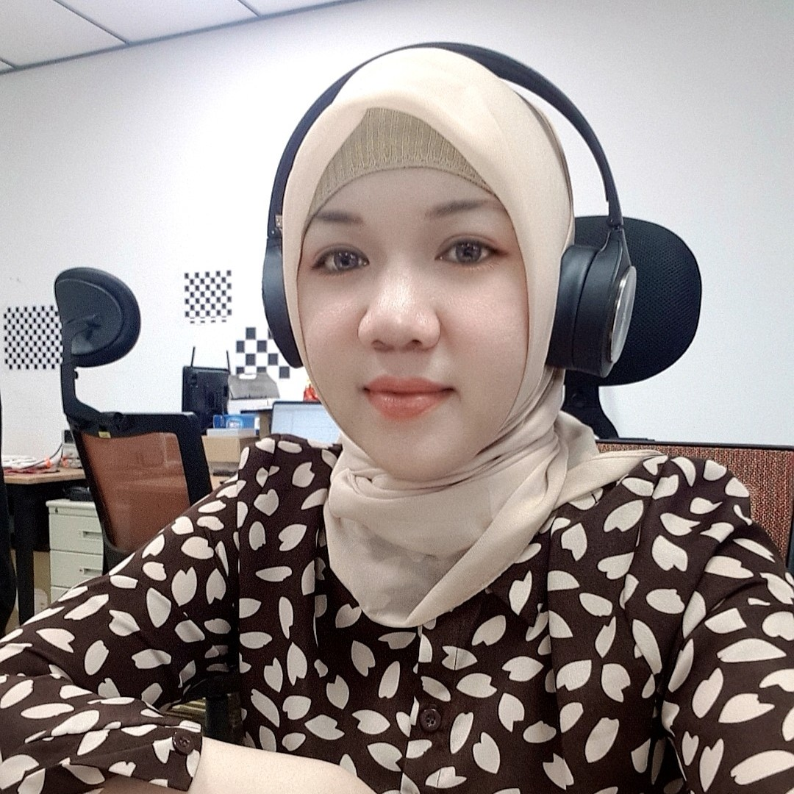

{% if site.blogfeed %}
	<div id="blogBubble" class="rounded_panel txt_lightgrey">
		<div class="top-rounded-panel grey-bg">
			<h1>RESUME</h1>
		</div>
		<div class="content-rounded-panel">
			<!--
			<div id="blogArticles">
			</div>
                        -->
			
			
			<h2><br/><br/>Postdoctoral Researcher</h2>
				<h5>National Taipei University of Technology</h5>
				<h5>Taipei, Taiwan</h5>
			<br/>
			<h2>RESEARCH</h2>
				<h5><br/>Moving Object Detection</h5>
					<iframe width="230" height="130" src="../img/mov2.mp4">
		        		</iframe><br/>
				<h5><br/>People Counting using RGB-D Camera</h5>
					<iframe width="230" height="130" src="../img/people_counting.mp4">
		        		</iframe><br/>
				<h5><br/>Car Detection YOLO-V3</h5>
					<iframe width="230" height="130" src="../img/car_yolo.mp4">
		        		</iframe><br/>

		</div>
	</div>
{% endif %}
